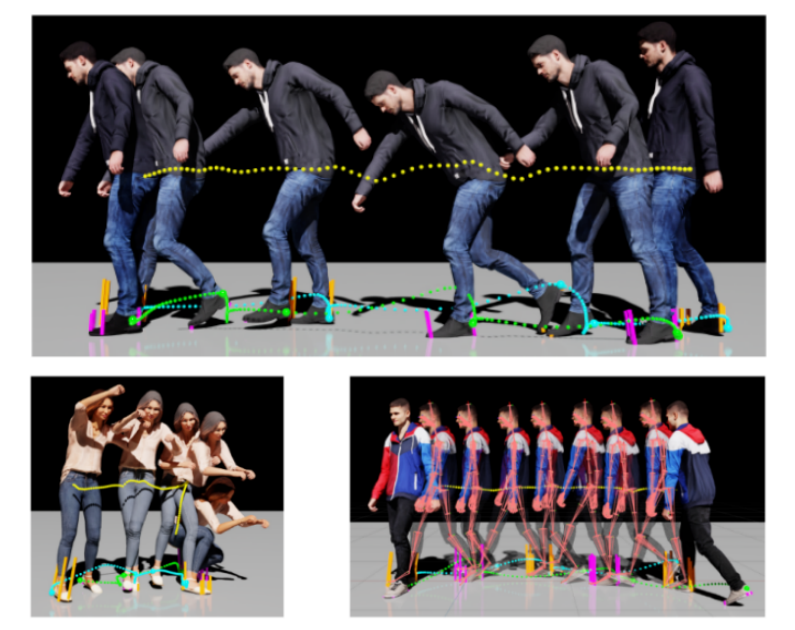
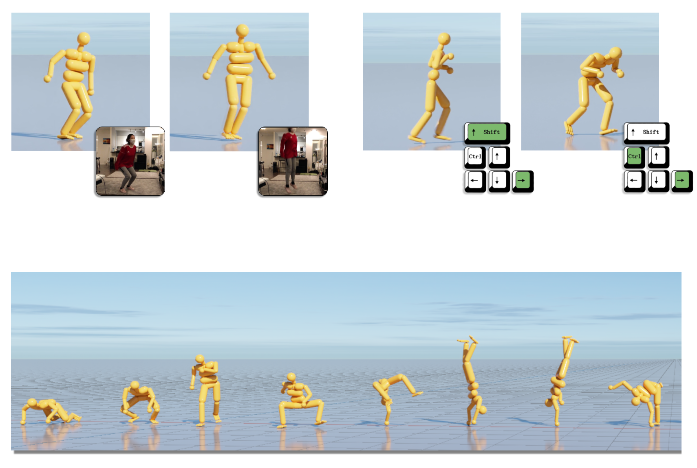
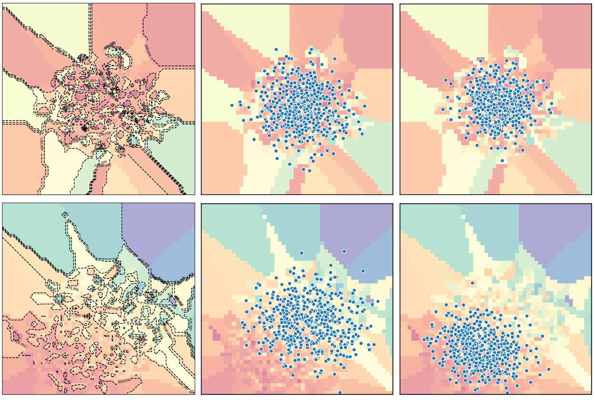

Tingwu Wang
Senior research scientist at Nvidia. Email = wilsonwanguoft @  .com .com
CV |
Google Scholar |
Github |
 Twitter |
Twitter |
 LinkedIn
LinkedIn
I am a senior research scientist in Nvidia's Generalist Embodied Agent Research (GEAR) team.
Previously I obtained my PhD in University of Toronto, proudly advised by Prof. Sanja Fidler
and Prof. Jimmy Ba.
My name is pronounced as Ting-Wu, and it means "midday" in Chinese.
My research experience ranges widely from developing animation motion engines to deploying real robots.
Since my PhD, I have been dedicated to exploring a central theme: creating scalable, robust, and generalist motion skills that seamlessly bridge the virtual and real worlds.
|
|
Education
-
 PhD in Computer Science @
University of Toronto
Jan. 2018 - June. 2022
PhD in Computer Science @
University of Toronto
Jan. 2018 - June. 2022
Toronto, Ontario, Canada
Advisor:
Prof. Sanja Fidler and
Prof. Jimmy Ba
-
MSc in Computer Science @
University of Toronto
Aug. 2016 - Jan. 2018
Toronto, Ontario, Canada, GPA: 4.0/4.0
Advisor:
Prof. Sanja Fidler
-
 BSc in Electronic Engineering @
Tsinghua University
Sep. 2012 - Jun. 2016
BSc in Electronic Engineering @
Tsinghua University
Sep. 2012 - Jun. 2016
Beijing, P. R. China
Advisor:
Prof. Xing Li
-
Visitor in Electronic Information @
Technischen Universität München
Sep. 2014 - Feb. 2015
Munich, Bavaria, Germany
|
Publications and Patents * equal contribution.
|
|
SONIC: Supersizing Motion Tracking for Natural Humanoid Whole-Body Control
Zhengyi Luo*,
Ye Yuan*,
Tingwu Wang*,
Chenran Li*,
Sirui Chen,
Fernando Castañeda,
Zi-Ang Cao,
Jiefeng Li,
David Minor,
Qingwei Ben,
Xingye Da,
Runyu Ding,
Cyrus Hogg,
Lina Song,
Edy Lim,
Eugene Jeong,
Tairan He,
Haoru Xue,
Wenli Xiao,
Zi Wang,
Simon Yuen,
Jan Kautz,
Yan Chang,
Umar Iqbal,
Linxi "Jim" Fan‡,
Yuke Zhu‡
arXiv preprint, 2025
Paper |
Project |
Arxiv
|

|
Machine Learning Models for Generative Human Motion Simulation
Xue Bin Peng,
Ye Yuan,
Davis Rempe,
Umar Iqbal,
Or Litany,
Tingwu Wang,
Chen Tessler,
Jan Kautz,
Sanja Fidler &
Michael Buttner
Patent, 2025
Link |
Talk
|

|
Synthesizing Physical Character-Scene Interactions
Mohamed Hassan,
Yunrong Guo,
Tingwu Wang,
Michael Black,
Sanja Fidler &
Xue Bin Peng
SIGGRAPH, 2023
Video |
Arxiv |
Project Webpage
|

|
Learning Scalable Physics-based Motion Skills with Reinforcement Learning
Tingwu Wang
PhD Thesis, 2022
Project Webpage
|
|

|
Physics-based Human Motion Estimation and Synthesis from Videos
Kevin Xie,
Tingwu Wang,
Umar Iqbal,
Yunrong Guo,
Sanja Fidler &
Florian Shkurti
International Conference on Computer Vision, ICCV, 2021
Two Minute Papers |
Arxiv |
Project Webpage
|
|

|
UniCon: Universal Neural Controller For Physics-based Character Motion
Tingwu Wang,
Yunrong Guo,
Maria Shugrina &
Sanja Fidler
Arxiv, 2020
Project Webpage |
Arxiv |
Teaser Demo |
Video |
PDF
|
|
|
Learning to Generate Diverse Dance Motions with Transformer
Jiaman Li,
Yihang Yin,
Hang Chu,
Yi Zhou,
Tingwu Wang,
Sanja Fidler &
Hao Li
Arxiv, 2020
Arxiv |
Video |
Code
|
|
|
Benchmarking Model-Based Reinforcement Learning
Tingwu Wang,
Xuchan Bao,
Ignasi Clavera,
Jerrick Hoang,
Yeming Wen,
Eric Langlois,
Shunshi Zhang,
Guodong Zhang,
Pieter Abbeel &
Jimmy Ba
Arxiv, 2019
Code |
Project Page |
Arxiv |
PDF
|
|

|
Exploring Model-based Planning with Policy Networks
Tingwu Wang
& Jimmy Ba
8th International Conference on Learning Representations (ICLR), 2020
Code |
Arxiv
|
|
|
Neural Graph Evolution: Towards Efficient Automatic Robot Design
Tingwu Wang*,
Henry Zhou*,
Sanja Fidler & Jimmy Ba
7th International Conference on Learning Representations (ICLR), 2019
Project Webpage |
Slides |
OpenReview |
Code |
Video |
Arxiv
|
|
|
NerveNet: Learning Structured Policy with Graph Neural Networks
Tingwu Wang*,
Renjie Liao*,
Jimmy Ba & Sanja Fidler
6th International Conference on Learning Representations (ICLR), 2018
Project Webpage |
Video |
OpenReview |
Slides
|
|
|
VirtualHome: Simulating Household Activities via Programs
Xavier Puig,
Kevin Ra,
Marko Boben,
Jiaman Li,
Tingwu Wang,
Sanja Fidler &
Antonio Torralba
Conference on Computer Vision and Pattern Recognition (CVPR), 2018 (Oral)
Project Webpage |
Slides |
Talk |
Arxiv |
BBC News |
MIT News
|
|
|
Access Points Selection in Super WiFi Network Powered by Solar Energy Harvesting
Tingwu Wang,
Chunxiao Jiang &
Yong Ren
IEEE Wireless Communications and Networking Conference (WCNC), 2016
PDF |
IEEE Webpage
|
|
|
Access Strategy in Energy Harvesting Super WiFi Network: A POMDP Method
Tingwu Wang,
Jian Wang,
Chunxiao Jiang,
Jingjing Wang &
Yong Ren
IEEE 83rd Vehicular Technology Conference (VTC), 2016
PDF |
Arxiv |
IEEE Webpage |
Code
|
|
|
Costume Detection and Attribute Value Identification Method and System
Qiu Shi,
Po Man Cheng,
Tingwu Wang,
Yan Xia &
Wei Zhang.
Patent: CN105447529 A, 2016.
Work done as an intern in SenseTime. Contributions used in DeepFashion.
|
| About Myself ( or Ting-Wu Wang) |
|
I was born in Changsha. I was named by my grandfather, where "Ting-wu" means "the exact midday". The name comes from the Commentary on the Water Classic written by an ancient Chinese geographer called Li Daoyuan:
"To witness the Sun and the Moon, one shall wait until the exact midday or midnight."
|
|